Here you can get information on the usage of the ARCH Network Editor.
The tutorial gives an overview of the editor capabilities, guiding you through the steps of creating a network, defining elements characteristics, submit the network to simulation and review the results.
Let's start by launching the application. The main window should appear on the screen.
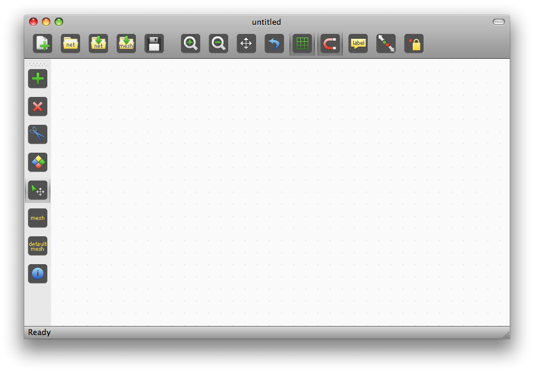
You see the toolbar on the top, some other tool buttons on the left and the editing area (the light gray dotted portion) in the middle of the screen.The status bar at the bottom of the screen provides messages on the application status (now it says 'Ready') and also useful hints about the functionalities of the tools when the mouse is on any icon. All the functionalities displayed on the screen can also be accessed from the menu bar at the top of the screen (the menu bar is not shown in the picture).
Selecting the 'GREEN PLUS' icon (addSegment tool) on top of the left buttons allows you to create new edges of the network. Just click in the editor area, drag and release.
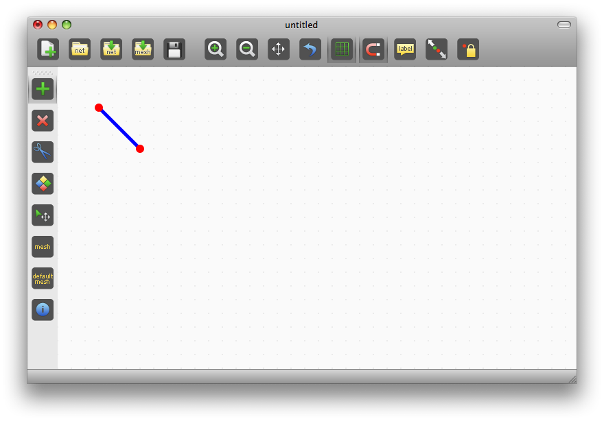
The showGrid and snapToGrid options are activated by default. If you don't like them, just deselect the corresponding icons in the toolbar.
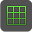
You can add other edges by clicking, dragging and releasing.
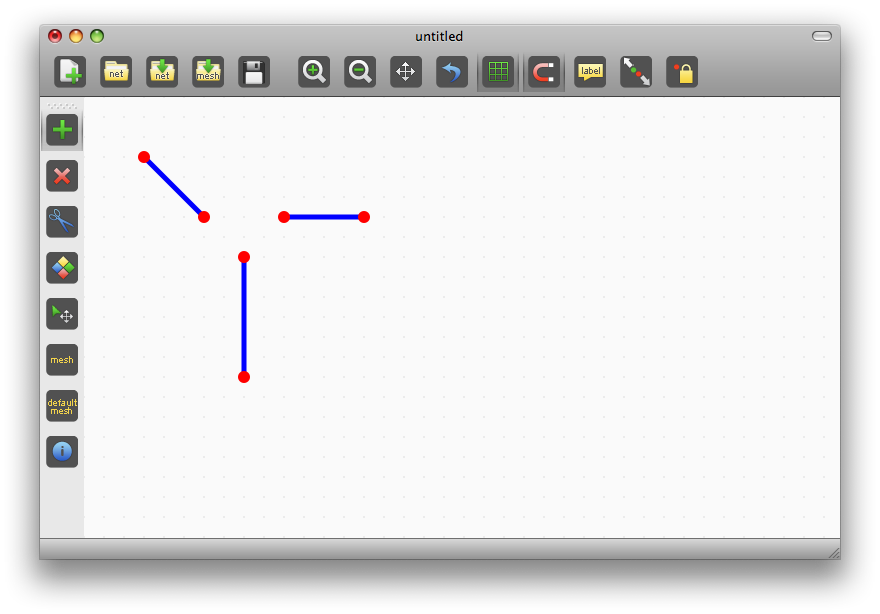
Clicking on a node when the mouse-cursor is close to it (the node is yellow-highlighted), makes the edge to start on that node, sharing the node with the other edge.
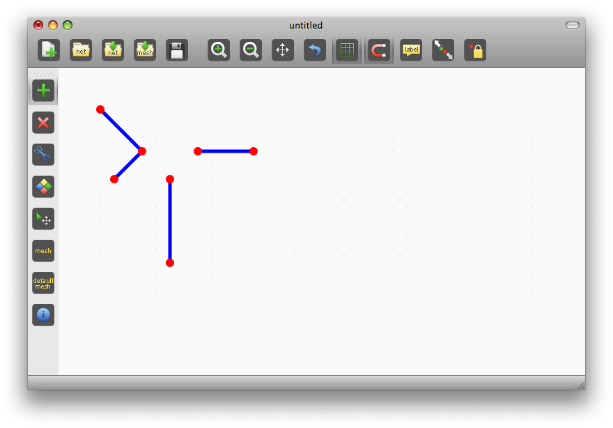
The same applyies on mouse release: releasing the mouse when the cursor is close to a node (again, yellow-highlighted), connects the edge to the edges owning the node.
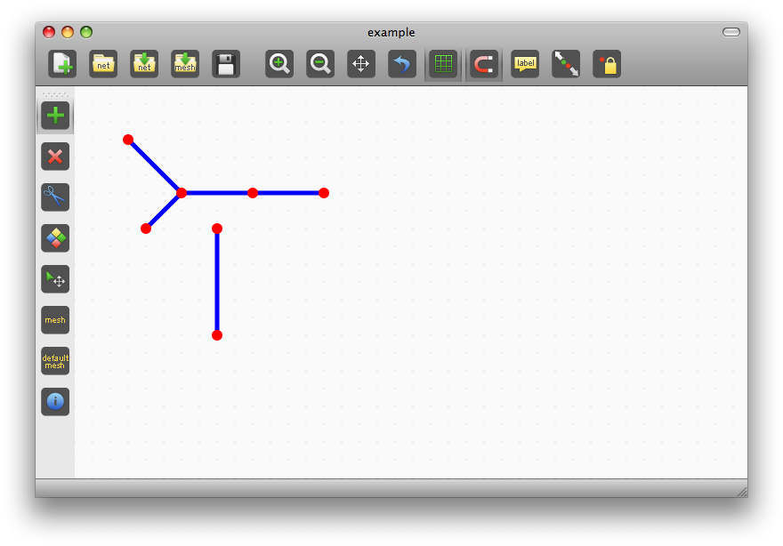
The name of the network is written at the top of the window application: before it was 'untitled', now it is 'example'.Let's have a look at the files the application has saved.
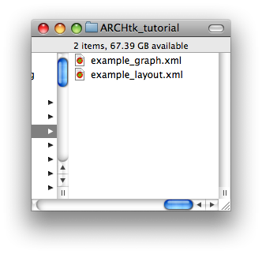
There is an example_graph.xml file and an example_layout.xml file. The first (_graph.xml) has all the information about how nodes and edges are connected, while the second (_layout.xml) stores the graphical appearance of the network.These two files (and also the _mesh.xml file that we will see later) should always stay in the same folder to allow the application to work with them.
Going back to our example, click on an edge (still with the addSegment tool selected) and drag to make it to become curved.
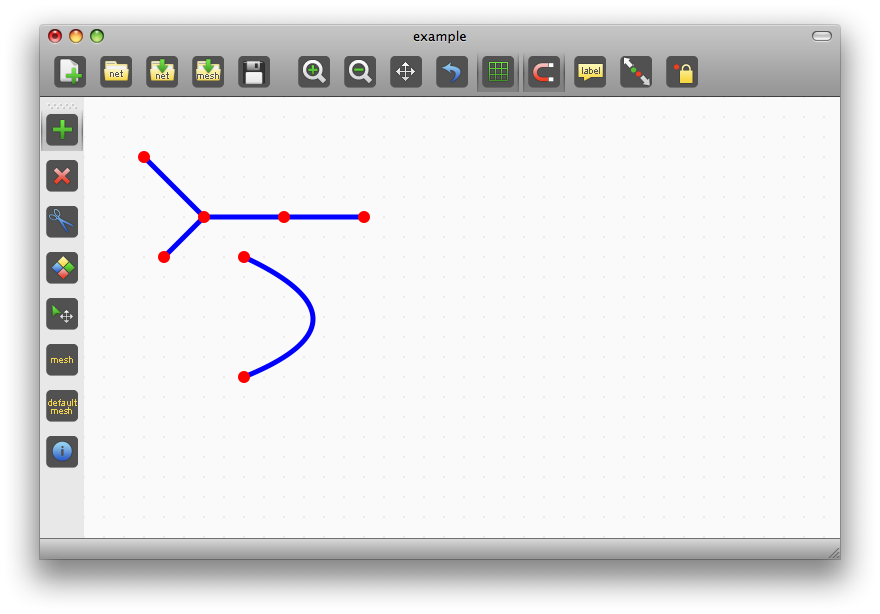
This is useful when you have an intricated network and you want to see something which is beyond one edge.If you select the 'RED CROSS' icon (removeSegment tool) below the addSegment icon, you can remove edges form the network by clicking on them.
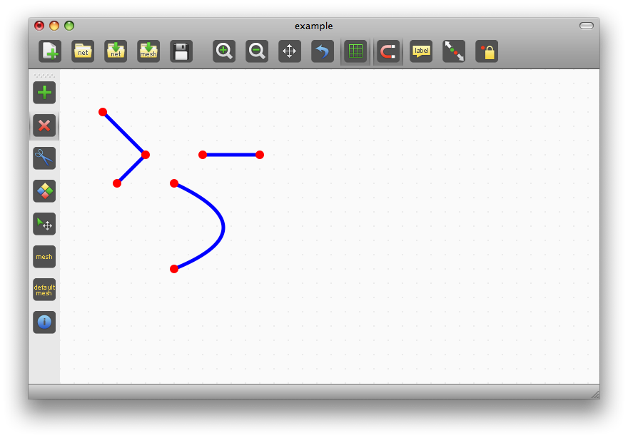
UNDO - REDO functionalities are provided in order to recover if any mistake has been done. They are accessible using the standard keyboard shortcuts or through the Edit menu.The splitSegment tool ('SCISSORS' icon) splits edges in two, dividing them at their middle point. If the edge is too short, the splitting cannot be done.
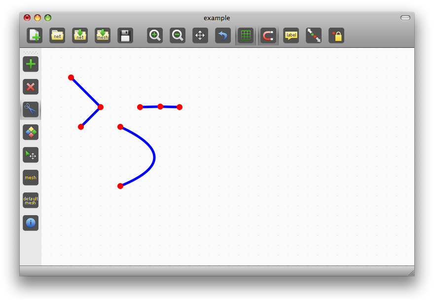
The selectElement tool allows to select elements of the network.
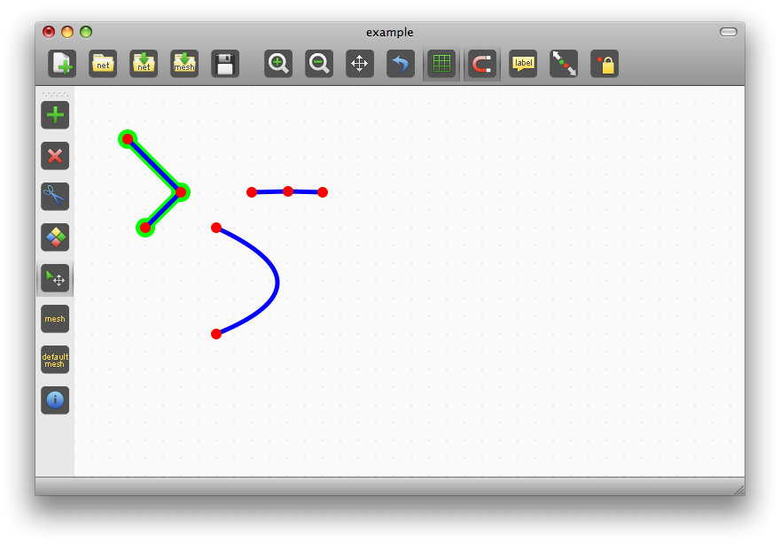
If you click on selected items, you can move them.
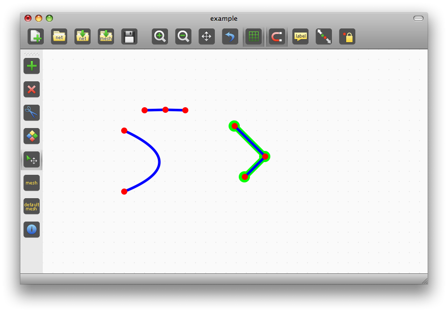
Clicking on the removeEdge tool makes the selected edges to be deleted.
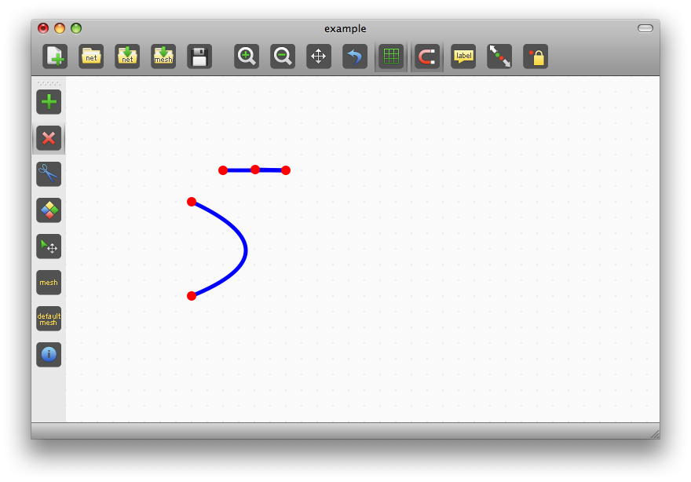
The information tool ('BLUE ROUNDED i' icon) allows the editing of the characteristics of the elements. Select this tool and click on a node.
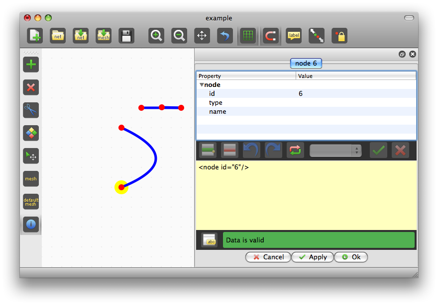
The editing window appears. It is divided in two portions: the upper displays the information of the element that you can edit, the lower reports the XML representing the element. There is also a 'message line' that displays messages regarding the validity of the inserted information. It also changes its color: green if everything is fine, red otherwise.Double click on the line that you want to edit ('name' in this case), enter the information ('foo') and click on the 'APPLY' button to accept it. The same result is obtained by clicking the 'OK' button, but this makes the editing window to disappear.

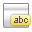
In case you don't want to accept the changes, click the 'RED CROSS' icon or the 'RESET' icon.
Now that the node has a name, click on the 'LABEL' icon in the toolbar to make the name to be shown.
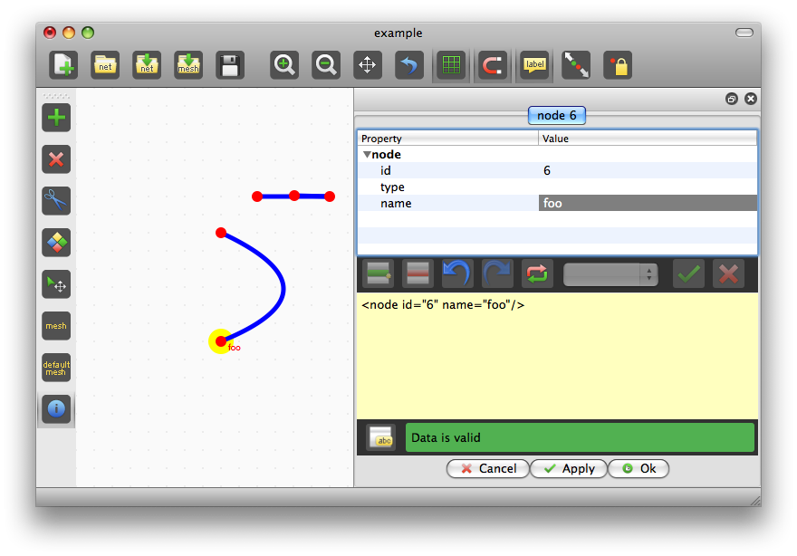
Now select the 'name' property in the editing area and click on the 'Add child element icon'.
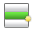
The 'properties' field appears. Again, select it and click on the 'Add child element icon' to add new characteristics. To remove fields, use the 'REMOVE ELEMENT' function.
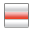
If any field is mandatory, it cannot be removed.In this way, you can enter any kind of information needed to perform the simulation. We'll see how to launch a simulation later on.
Now we'll see how to import an existing network. If the network has not been generated by the ARCH Network Editor, it consists of astand alone XML file. Click on the 'IMPORT NETWORK' icon, select the network (test.xml in this case) and the application loads it.
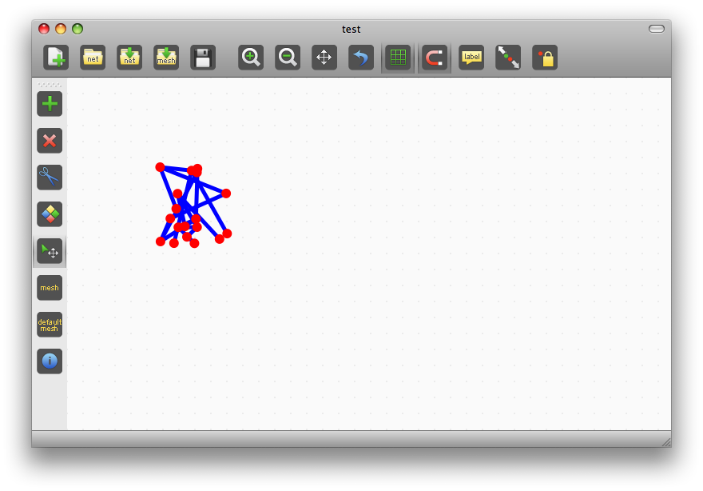
The nodes position is not specified in the xml file we've imported (there is not the _layout.xml file, do you remember?), thus a random position has been assigned to every node. Click on the UNRAVEL icon (maybe more than once)
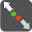
to disentangle the network.

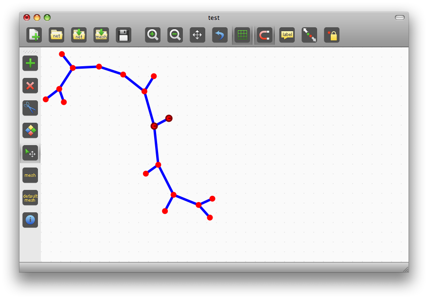
On the contrary, if you import a network previously saved by the application using the 'OPEN NETWORK', the nodes position is not randomly assigned, but is taken from the _layout.xml file. That's the reason why the _graph.xml file and the _layout.xml file must stay in the same directory.To see that, save the network you have imported using the 'save as...' function. We use 'newExample' as name. Click on the 'NEW NETWORK' icon to empty the editing area and open the network you have just saved.
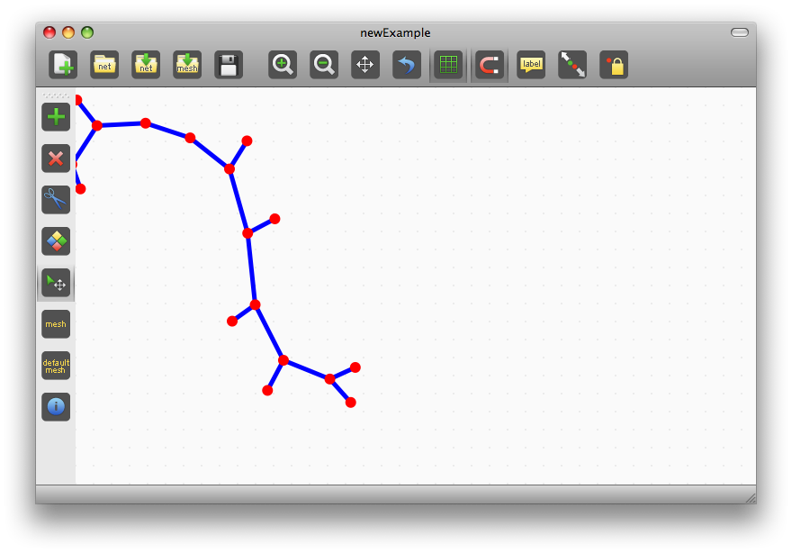
The network cannot be seen in its completeness, thus use 'TRANSLATE' or 'ZOOM IN' or 'ZOOM OUT'. To go back to the initial view (in terms of zooming and screen translation), click on the 'RESET VIEW' icon. We use 'TRANSLATE to translate the screen and to make the whole network visible.
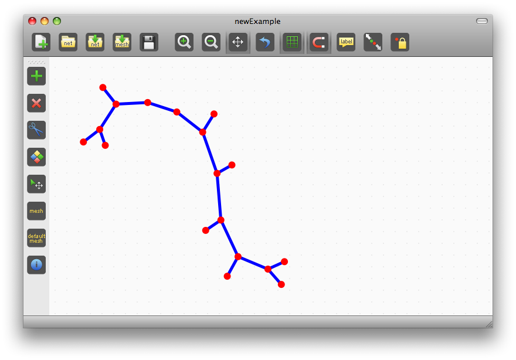
Clicking on the 'DEFAULT MESH' icon applies a default 3-elements mesh to every edge of the network. Mesh elements are displayed as green circles with a letter corresponding to the type of mesh element. The default mesh element is the 0D_FiveDofsV2, represented using the number 5.
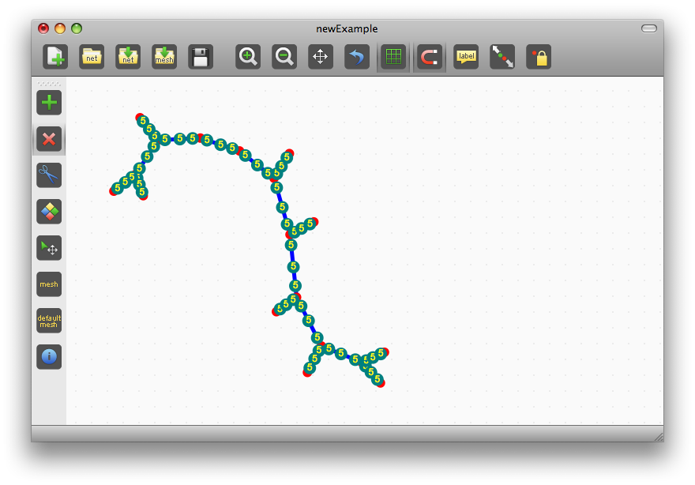
In order to choose a different type of mesh element to be used, you have to explicitly define it in the network. To do that, perform an UNDO action to return to the netwrok without the mesh and, using the information tool, insert the type of element you want to use.